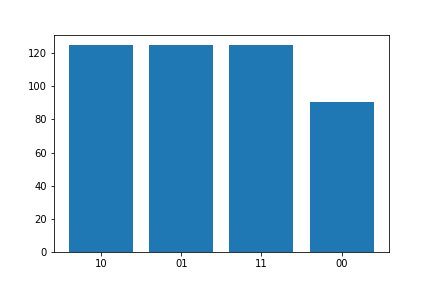
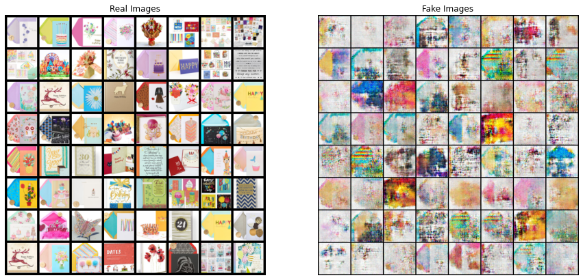

Projects (and Skills)
There are a ton of things I'm interested in and I'm still exploring! Unfortunately, I can't open-source a lot of the work I'm doing right now, but here are some open-source or completed projects I've worked on!
General Projects
Personal Technical Blog
https://shreya-chaudhary.medium.com/
I used to write blogs on concepts and projects I was working on, publishing with top data science publications like Towards Data Science, Geek Culture, DataDrivenInvestors, Dev Genius, and more! I even had a publication reach out to translate my article! Check it out to see a ton of my older projects! You'll notably find a ton of TigerGraph projects I worked on! Here are some pictures from those projects!

DevPost
https://devpost.com/GenericP3rson
Several open-source full-stack applications in various areas of interest!
Technical Projects
A Suite of Differential Privacy Algorithms
During IAP 2023, I helped develop a suite of differential privacy algorithms specifically for energy-related use cases. I used the Laplace Mechanism to add sufficient noise to both continuous and discrete data. Here's a gif of the algorithm in action, generating a synthetic dataset on some arbitrary distribution I created. You'll notice that at the beginning, the data is completely different from the original dataset; however, over time, it converges to roughly the ideal dataset with a certain amount of noise.

Modelling 1000+ Satellites with GMAT
Over the summer, I got to learn how to conduct orbit modelling and wrote a Python program to generate a script to feed into NASA's GMAT to simulate over 1,000 satellites in low-Earth orbit (LEO). This is simulating a Walker Constellation.

OrderBot
For 6.421, I built a robot that could prepare foods from a human order given a list of random ingredients from a known set of ingredients.
Libraries
TorchQuantum
I've helped out with expanding and maintaining TorchQuantum, a GPU-accelerated PyTorch-based framework for quantum computing and simulation. I've worked on streamlining the review process for new PRs, solidifying the structure of the framework, and added several new gates. I also penned a new tutorial.

TigerGraph-CosmoGraph Plugin
I created the first plugin for the GPU-accelerated graph visualizer Cosmograph, allowing it to easily port in TigerGraph. You can check out the integration here.
TigerGraph.js
I developed a Node.js connector to ease the process for full-stack developers to use TigerGraph. (This project also managed to win 3rd place overall at the Graphathon challenge!)
TigerGo
When I began learning Golang, I created a TigerGraph wrapper in the language which I then used to create CLIs with Cobra and experimented with Golang's full-stack options. Check it out!
Fun Generative Projects
A DCGAN Birthday Card
For a friend's birthday, I used Selenium to scrape a ton of birthday card images and trained a Deep Convolutional Generative Adversial Network to make a birthday card. The results weren't bad given the noise—check it out! (The input images are on the left and the generated images are on the right.)

Using Quantum Procedural Generation on Squirrels
For our final project for introduction to quantum computing over IAP, my project partners and I used quantum procedural generation on squirrels. Check out this blog outlining what we did!